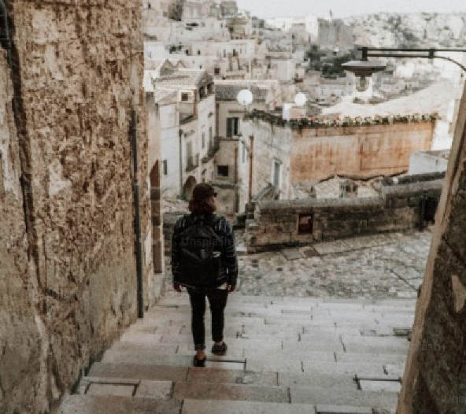

REISEN
Warum reisen Menschen gerne in fremde Länder oder Städte? Ist es, um dem Alltagsstress zu entkommen und wortwörtlich in “neue Welten” einzutauchen? Ist es, um sich kulturell und menschlich fortzubilden? Ist es, um besonders viel von der Welt gesehen zu haben, um später den Enkelkindern Geschichten zu erzählen? Ich persönlich denke, dass Menschen dazu bestimmt sind, sich über ihren Horizont hinaus zu bewegen. Also auch ganz wörtlich auf eine örtliche Art und Weise. Es ist ohne Frage ein erfüllendes Gefühl, neue Orte zu entdecken, neue Leute kennenzulernen, die Sitten und Sprachen anderer Nationen zu verstehen und sich so an einem fremden Ort vielleicht gar nicht mehr so fremd zu fühlen. Weil man sich, wie ich es empfinde, wie ein neuer und klein wenig besserer Mensch fühlt, erzähle ich im Folgenden über meine Impressionen der wunderbaren Leidenschaft zu reisen.


REISEN BEDEUTET UNABHÄNGIGKEIT
TRAUMZIEL SCHWEDEN
Mein Interesse für Schweden habe ich durch schwedische Medien, genauer gesagt Film- und Fernsehen, erweckt. In meiner Kindheit waren es die Astrid-Lindgren-Filme, heute sind es schwedische Netflix-Produktionen, die mich für das facettenreiche Land begeistern. Unendlich weite Seen, “schwedenrote*” Holzhäuser, unberührte Wälder von riesigem Ausmaß: die schwedische Landschaften gehören für mich zu den schönsten der ganzen Welt. *Fun Fact, wieso es so viele rote Häuser in Schweden gibt: Der bestimmte Rot-Ton stammt aus der schwedischen Stadt Falun, die bekannt ist für ihre einstige Kupfermine. Das besondere rote Farbpigment ist dabei ein natürliches Abfallmaterial, das beim Kupferbergbau entsteht. Mit Wasser, Mehl und Leinöl wird schließlich der typische Hausanstrich hergestellt, der bis heute besteht. Wenn ich eine Reise nach Schweden planen dürfte, dann würde ich natürlich gerne nach Stockholm. Shoppen, Zimtschnecken essen und das ABBA-Museum besuchen. Was außerdem nicht fehlen darf ist die Besichtigung von Drehorten meiner Lieblingsserie, aus welcher sich ein Schloss nicht weit weg von der Hauptstadt befindet. Auf diese Weise könnte ich auch meine sprachlichen Fähigkeiten ausbauen, da ich mich nun schon seit einem Jahr daran versuche, Schwedisch zu lernen. Natürlich mit dem Ziel, meine Fähigkeiten zu irgendeinem Zeitpunkt auch in der Praxis umsetzten zu können. Es wäre also ein großer Traum meinerseits, einen schwedischen Sommer a la “Wir Kinder aus Bullerbü” zu erleben und das wunderschöne Naturreich aus nächster Nähe mit eigenen Augen zu bestaunen.
FRÜHLING IN TOKIO, SOMMER AUF MYKONOS, HERBST IN LONDON, WINTER IN NEW YORK

LONDON
Heathrow, Tube, Mind The Gap, Baked Beans, Harry Potter, Big Ben, Camden Market, Natural History Museum
LIEBLINGSORTE
Meinen Sommer verbringe ich am liebsten am Meer. Tatsächlich ist mein meist besuchter Ort im Süden die Insel Rab in Kroatien. Zum allerersten Mal habe ich die Region und das Land generell 2015, das heißt mit elf Jahren, sehen dürfen. Das Meer und der Strand sind unendlich idyllisch und fordern dazu auf, die Seele baumeln zu lassen. Die Tage, welche ich dort bei schönstem Sonnenschein einfach nur draußen in der Natur genießen durfte, schätze ich am meisten. Für mich ist es das Gefühl von Gewohnheit und die Sicherheit, dass es wieder eine schöne Zeit an diesem Ort wird und selbst wenn diese verstrichen ist, es ein Wiedersehen gibt.
ALSO: FLUG, ROADTRIP ODER DOCH TRAUMREISE?
KONTAKT
Wenn Sie sich in meinem Hobby und meiner Leidenschaft zumindest ein wenig selber wiederentdeckt haben oder Fragen dazu haben, zögern Sie nicht und kontaktieren Sie mich gerne jederzeit!
Kristin Quickner
Campus Münchberg
Kulmbacher Str. 76
95213 Münchberg
Tel: 09281 4098000
kristin.quickner@hof-university.de